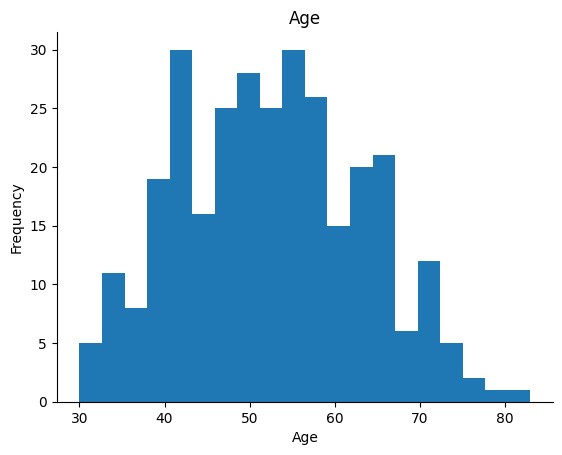
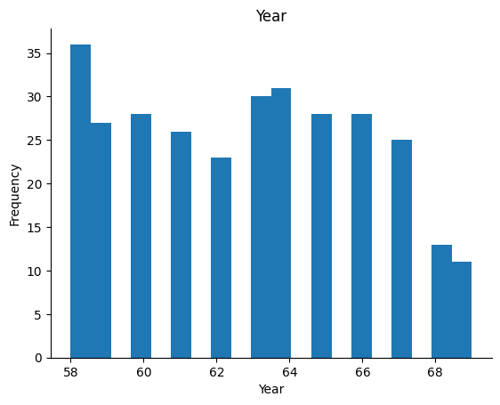
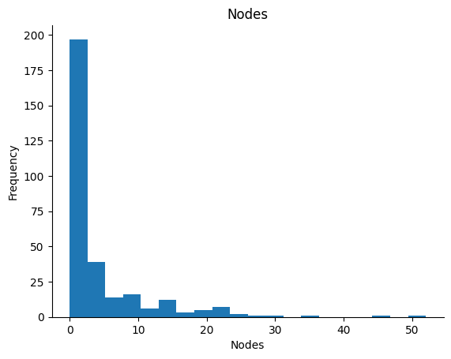
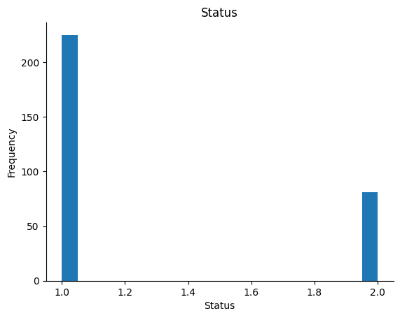

Dataset Haberna’s Survival#
Dataset ini mencakup kasus-kasus dari tahun 1958 hingga 1970, berasal dari penelitian di Rumah Sakit Billings, Universitas Chicago. Penelitian ini fokus pada kelangsungan hidup pasien setelah menjalani operasi kanker payudara.
Tujuan Analisis#
Penelitian ini bertujuan untuk memprediksi kelangsungan hidup pasien berdasarkan data yang tersedia. Analisis ini dapat membantu dalam pengambilan keputusan klinis dan perawatan pasien di masa depan.
pip install ucimlrepo
Collecting ucimlrepo
Downloading ucimlrepo-0.0.7-py3-none-any.whl.metadata (5.5 kB)
Requirement already satisfied: pandas>=1.0.0 in c:\users\user\appdata\local\programs\python\python311\lib\site-packages (from ucimlrepo) (2.2.2)
Requirement already satisfied: certifi>=2020.12.5 in c:\users\user\appdata\local\programs\python\python311\lib\site-packages (from ucimlrepo) (2024.6.2)
Requirement already satisfied: numpy>=1.23.2 in c:\users\user\appdata\local\programs\python\python311\lib\site-packages (from pandas>=1.0.0->ucimlrepo) (1.26.4)
Requirement already satisfied: python-dateutil>=2.8.2 in c:\users\user\appdata\local\programs\python\python311\lib\site-packages (from pandas>=1.0.0->ucimlrepo) (2.9.0.post0)
Requirement already satisfied: pytz>=2020.1 in c:\users\user\appdata\local\programs\python\python311\lib\site-packages (from pandas>=1.0.0->ucimlrepo) (2024.1)
Requirement already satisfied: tzdata>=2022.7 in c:\users\user\appdata\local\programs\python\python311\lib\site-packages (from pandas>=1.0.0->ucimlrepo) (2024.1)
Requirement already satisfied: six>=1.5 in c:\users\user\appdata\local\programs\python\python311\lib\site-packages (from python-dateutil>=2.8.2->pandas>=1.0.0->ucimlrepo) (1.16.0)
Downloading ucimlrepo-0.0.7-py3-none-any.whl (8.0 kB)
Installing collected packages: ucimlrepo
Successfully installed ucimlrepo-0.0.7
Note: you may need to restart the kernel to use updated packages.
from ucimlrepo import fetch_ucirepo
# fetch dataset
haberman_s_survival = fetch_ucirepo(id=43)
# data (as pandas dataframes)
X = haberman_s_survival.data.features
y = haberman_s_survival.data.targets
# metadata
print(haberman_s_survival.metadata)
# variable information
print(haberman_s_survival.variables)
{'uci_id': 43, 'name': "Haberman's Survival", 'repository_url': 'https://archive.ics.uci.edu/dataset/43/haberman+s+survival', 'data_url': 'https://archive.ics.uci.edu/static/public/43/data.csv', 'abstract': 'Dataset contains cases from study conducted on the survival of patients who had undergone surgery for breast cancer', 'area': 'Health and Medicine', 'tasks': ['Classification'], 'characteristics': ['Multivariate'], 'num_instances': 306, 'num_features': 3, 'feature_types': ['Integer'], 'demographics': ['Age'], 'target_col': ['survival_status'], 'index_col': None, 'has_missing_values': 'no', 'missing_values_symbol': None, 'year_of_dataset_creation': 1976, 'last_updated': 'Mon Mar 04 2024', 'dataset_doi': '10.24432/C5XK51', 'creators': ['S. Haberman'], 'intro_paper': None, 'additional_info': {'summary': "The dataset contains cases from a study that was conducted between 1958 and 1970 at the University of Chicago's Billings Hospital on the survival of patients who had undergone surgery for breast cancer.", 'purpose': None, 'funded_by': None, 'instances_represent': None, 'recommended_data_splits': None, 'sensitive_data': None, 'preprocessing_description': None, 'variable_info': " 1. Age of patient at time of operation (numerical)\r\n 2. Patient's year of operation (year - 1900, numerical)\r\n 3. Number of positive axillary nodes detected (numerical)\r\n 4. Survival status (class attribute)\r\n -- 1 = the patient survived 5 years or longer\r\n -- 2 = the patient died within 5 year", 'citation': None}}
name role type demographic description units \
0 age Feature Integer Age None None
1 operation_year Feature Integer None None None
2 positive_auxillary_nodes Feature Integer None None None
3 survival_status Target Integer None None None
missing_values
0 no
1 no
2 no
3 no
from ucimlrepo import fetch_ucirepo
import pandas as pd
# Fetch dataset
haberman_s_survival = fetch_ucirepo(id=43)
# Data (as pandas dataframes)
X = haberman_s_survival.data.features
y = haberman_s_survival.data.targets
# Combine features and target into one dataframe
data = pd.concat([X, y], axis=1)
# Save to CSV
data.to_csv('haberman_s_survival.csv', index=False)
# Display the entire dataframe
print(data.head(len(data)))
age operation_year positive_auxillary_nodes survival_status
0 30 64 1 1
1 30 62 3 1
2 30 65 0 1
3 31 59 2 1
4 31 65 4 1
.. ... ... ... ...
301 75 62 1 1
302 76 67 0 1
303 77 65 3 1
304 78 65 1 2
305 83 58 2 2
[306 rows x 4 columns]
Menarik Data#
import pandas as pd
# URL dataset
url = 'http://archive.ics.uci.edu/ml/machine-learning-databases/haberman/haberman.data'
# Kolom dalam dataset
columns = ['Age', 'Year', 'Nodes', 'Status']
# Membaca data ke dalam DataFrame
df = pd.read_csv(url, header=None, names=columns)
# Menampilkan DataFrame
df
| Age | Year | Nodes | Status | |
|---|---|---|---|---|
| 0 | 30 | 64 | 1 | 1 |
| 1 | 30 | 62 | 3 | 1 |
| 2 | 30 | 65 | 0 | 1 |
| 3 | 31 | 59 | 2 | 1 |
| 4 | 31 | 65 | 4 | 1 |
| ... | ... | ... | ... | ... |
| 301 | 75 | 62 | 1 | 1 |
| 302 | 76 | 67 | 0 | 1 |
| 303 | 77 | 65 | 3 | 1 |
| 304 | 78 | 65 | 1 | 2 |
| 305 | 83 | 58 | 2 | 2 |
306 rows × 4 columns
Plotting Data#
Data Distribution#
import pandas as pd
import matplotlib.pyplot as plt
# URL dataset
url = 'http://archive.ics.uci.edu/ml/machine-learning-databases/haberman/haberman.data'
# Kolom dalam dataset
columns = ['Age', 'Year', 'Nodes', 'Status']
# Membaca data ke dalam DataFrame
df = pd.read_csv(url, header=None, names=columns)
# Plotting histogram untuk setiap fitur
features = ['Age', 'Year', 'Nodes', 'Status']
for feature in features:
df[feature].plot(kind='hist', bins=20, title=feature)
plt.gca().spines[['top', 'right']].set_visible(False)
plt.xlabel(feature)
plt.ylabel('Frequency')
plt.show()




2D Distribution#
import pandas as pd
import seaborn as sns
import matplotlib.pyplot as plt
from sklearn.neighbors import LocalOutlierFactor
# Memuat dataset "Haberman's Survival"
url = "https://archive.ics.uci.edu/ml/machine-learning-databases/haberman/haberman.data"
kolom = ['Umur', 'Tahun_operasi', 'Nodus_akselar', 'Status_kelangsungan_hidup']
df = pd.read_csv(url, names=kolom)
# Asumsi df adalah DataFrame Anda dengan kolom-kolom yang relevan
# Mengonversi kolom yang dipilih menjadi array numpy
X = df[['Umur', 'Tahun_operasi', 'Nodus_akselar']].values
# Menerapkan Local Outlier Factor
lof = LocalOutlierFactor(n_neighbors=3)
y_pred = lof.fit_predict(X)
# Menambahkan prediksi outlier ke DataFrame
df['Outlier'] = y_pred
# Menampilkan plot pasangan (pair plot)
pair_plot = sns.pairplot(df, hue='Outlier', palette={1: 'blue', -1: 'red'}, diag_kind='auto')
# Menambahkan judul
pair_plot.fig.suptitle('Visualisasi Outlier Menggunakan Local Outlier Factor (LOF) pada Dataset Haberman\'s Survival', y=1.02)
# Menampilkan plot
plt.show()
---------------------------------------------------------------------------
ModuleNotFoundError Traceback (most recent call last)
Cell In[6], line 2
1 import pandas as pd
----> 2 import seaborn as sns
3 import matplotlib.pyplot as plt
4 from sklearn.neighbors import LocalOutlierFactor
ModuleNotFoundError: No module named 'seaborn'
Explorasi Data#
# Menampilkan statistik deskriptif untuk kolom yang relevan
df[['Umur', 'Tahun_operasi', 'Nodus_akselar']].describe()
| Umur | Tahun_operasi | Nodus_akselar | |
|---|---|---|---|
| count | 306.000000 | 306.000000 | 306.000000 |
| mean | 52.457516 | 62.852941 | 4.026144 |
| std | 10.803452 | 3.249405 | 7.189654 |
| min | 30.000000 | 58.000000 | 0.000000 |
| 25% | 44.000000 | 60.000000 | 0.000000 |
| 50% | 52.000000 | 63.000000 | 1.000000 |
| 75% | 60.750000 | 65.750000 | 4.000000 |
| max | 83.000000 | 69.000000 | 52.000000 |
Tipe Data#
Melihat jumlah kolom dan baris pada dataset Haberman’s Survival
df.shape
(306, 5)
Deskripsi Statistik Sederhana#
df.describe()
| Umur | Tahun_operasi | Nodus_akselar | Status_kelangsungan_hidup | Outlier | |
|---|---|---|---|---|---|
| count | 306.000000 | 306.000000 | 306.000000 | 306.000000 | 306.000000 |
| mean | 52.457516 | 62.852941 | 4.026144 | 1.264706 | 0.882353 |
| std | 10.803452 | 3.249405 | 7.189654 | 0.441899 | 0.471359 |
| min | 30.000000 | 58.000000 | 0.000000 | 1.000000 | -1.000000 |
| 25% | 44.000000 | 60.000000 | 0.000000 | 1.000000 | 1.000000 |
| 50% | 52.000000 | 63.000000 | 1.000000 | 1.000000 | 1.000000 |
| 75% | 60.750000 | 65.750000 | 4.000000 | 2.000000 | 1.000000 |
| max | 83.000000 | 69.000000 | 52.000000 | 2.000000 | 1.000000 |
Jumlah Data Setiap Class#
count_per_class = df['Status_kelangsungan_hidup'].value_counts()
Kualitas Data#
Mencari Missing Value#
df.isnull().sum()
Umur 0
Tahun_operasi 0
Nodus_akselar 0
Status_kelangsungan_hidup 0
Outlier 0
dtype: int64
Data Outlier#
Data Pre-Processing#
import pandas as pd
from sklearn.preprocessing import MinMaxScaler
# Memuat dataset "Haberman's Survival"
url = "https://archive.ics.uci.edu/ml/machine-learning-databases/haberman/haberman.data"
kolom = ['Umur', 'Tahun_operasi', 'Nodus_akselar', 'Status_kelangsungan_hidup']
df = pd.read_csv(url, names=kolom)
# Pisahkan fitur numerik
numeric_features = ['Umur', 'Tahun_operasi', 'Nodus_akselar']
df_numeric = df[numeric_features]
# Inisialisasi MinMaxScaler
scaler = MinMaxScaler()
# Normalisasi data numerik
df_normalized = pd.DataFrame(scaler.fit_transform(df_numeric), columns=df_numeric.columns)
# Gabungkan kembali dengan kolom 'Status_kelangsungan_hidup'
df_normalized['Status_kelangsungan_hidup'] = df['Status_kelangsungan_hidup']
# Tampilkan hasil normalisasi
print(df_normalized.head())
Umur Tahun_operasi Nodus_akselar Status_kelangsungan_hidup
0 0.000000 0.545455 0.019231 1
1 0.000000 0.363636 0.057692 1
2 0.000000 0.636364 0.000000 1
3 0.018868 0.090909 0.038462 1
4 0.018868 0.636364 0.076923 1
Local Outlier Factor#
Check Outlier
# Inisialisasi Local Outlier Factor (LOF)
lof = LocalOutlierFactor(n_neighbors=5, p=2)
# Fit dan prediksi dengan LOF
lof_predict = lof.fit_predict(df.drop(['Status_kelangsungan_hidup'], axis=1))
# Mengidentifikasi outlier
outlier_indices = df.index[lof_predict == -1]
# Menampilkan hasil outlier
print("Indeks yang diprediksi sebagai outlier:", outlier_indices)
Indeks yang diprediksi sebagai outlier: Index([9, 17, 21, 45, 47, 62, 174, 215, 281, 285, 305], dtype='int64')
# Mengakses baris outlier dalam DataFrame
df.loc[outlier_indices]
| Umur | Tahun_operasi | Nodus_akselar | Status_kelangsungan_hidup | |
|---|---|---|---|---|
| 9 | 34 | 58 | 30 | 1 |
| 17 | 36 | 69 | 0 | 1 |
| 21 | 37 | 59 | 6 | 1 |
| 45 | 41 | 67 | 0 | 2 |
| 47 | 41 | 59 | 8 | 1 |
| 62 | 43 | 58 | 52 | 2 |
| 174 | 54 | 67 | 46 | 1 |
| 215 | 59 | 62 | 35 | 2 |
| 281 | 69 | 67 | 8 | 2 |
| 285 | 70 | 58 | 0 | 2 |
| 305 | 83 | 58 | 2 | 2 |
df
| Umur | Tahun_operasi | Nodus_akselar | Status_kelangsungan_hidup | |
|---|---|---|---|---|
| 0 | 30 | 64 | 1 | 1 |
| 1 | 30 | 62 | 3 | 1 |
| 2 | 30 | 65 | 0 | 1 |
| 3 | 31 | 59 | 2 | 1 |
| 4 | 31 | 65 | 4 | 1 |
| ... | ... | ... | ... | ... |
| 301 | 75 | 62 | 1 | 1 |
| 302 | 76 | 67 | 0 | 1 |
| 303 | 77 | 65 | 3 | 1 |
| 304 | 78 | 65 | 1 | 2 |
| 305 | 83 | 58 | 2 | 2 |
306 rows × 4 columns
import pandas as pd
import numpy as np
from sklearn.neighbors import LocalOutlierFactor
from sklearn.preprocessing import StandardScaler
# Memuat dataset "Haberman's Survival"
url = "https://archive.ics.uci.edu/ml/machine-learning-databases/haberman/haberman.data"
kolom = ['Umur', 'Tahun_operasi', 'Nodus_akselar', 'Status_kelangsungan_hidup']
df = pd.read_csv(url, names=kolom)
# Normalisasi data untuk LOF
scaler = StandardScaler()
numeric_features = ['Umur', 'Tahun_operasi', 'Nodus_akselar']
df[numeric_features] = scaler.fit_transform(df[numeric_features])
# Inisialisasi dan fit LOF
lof = LocalOutlierFactor(n_neighbors=5, p=2)
lof_predict = lof.fit_predict(df.drop(['Status_kelangsungan_hidup'], axis=1))
# Mengidentifikasi outlier
outlier_indices = df.index[lof_predict == -1]
# Membuat salinan dari DataFrame untuk mengganti nilai outlier
df_replaced = df.copy()
# Mengganti nilai outlier dengan nilai median dari kolom masing-masing
for index in outlier_indices:
for column in df_replaced.drop(['Status_kelangsungan_hidup'], axis=1).columns:
median_value = df_replaced[column].median()
if df_replaced[column].dtype == 'int64':
median_value = int(median_value)
df_replaced.loc[index, column] = median_value
# Kembali ke skala asli untuk kemudahan interpretasi
df_replaced[numeric_features] = scaler.inverse_transform(df_replaced[numeric_features])
# Menampilkan hasil akhir setelah penggantian outlier
print("Data setelah mengganti outlier dengan median:")
print(df_replaced.head())
Data setelah mengganti outlier dengan median:
Umur Tahun_operasi Nodus_akselar Status_kelangsungan_hidup
0 30.0 64.0 1.0 1
1 52.0 63.0 1.0 1
2 30.0 65.0 0.0 1
3 31.0 59.0 2.0 1
4 31.0 65.0 4.0 1
Data Modelling#
Gaussian Naive Bayes Classification#
import pandas as pd
# Memuat dataset "Haberman's Survival" dari UCI Machine Learning Repository
url = "https://archive.ics.uci.edu/ml/machine-learning-databases/haberman/haberman.data"
kolom = ['Umur', 'Tahun_operasi', 'Nodus_akselar', 'Status_kelangsungan_hidup']
df_haberman = pd.read_csv(url, names=kolom)
# Menyimpan DataFrame sebagai file CSV
df_haberman.to_csv("habermans_survival.csv", index=False)
# Menampilkan DataFrame
print(df_haberman)
Umur Tahun_operasi Nodus_akselar Status_kelangsungan_hidup
0 30 64 1 1
1 30 62 3 1
2 30 65 0 1
3 31 59 2 1
4 31 65 4 1
.. ... ... ... ...
301 75 62 1 1
302 76 67 0 1
303 77 65 3 1
304 78 65 1 2
305 83 58 2 2
[306 rows x 4 columns]
KNN 1#
import pandas as pd
from sklearn.neighbors import KNeighborsClassifier
from sklearn.metrics import accuracy_score
from sklearn.model_selection import train_test_split
from sklearn.preprocessing import LabelEncoder, StandardScaler
# Memuat dataset "Haberman's Survival"
url = "https://archive.ics.uci.edu/ml/machine-learning-databases/haberman/haberman.data"
kolom = ['Umur', 'Tahun_operasi', 'Nodus_akselar', 'Status_kelangsungan_hidup']
df = pd.read_csv(url, names=kolom)
# Memisahkan fitur dan label
feature_columns = ['Umur', 'Tahun_operasi', 'Nodus_akselar']
X = df[feature_columns].values
y = df['Status_kelangsungan_hidup'].values
# Mengencode label
label_encoder = LabelEncoder()
y = label_encoder.fit_transform(y)
# Normalisasi fitur
scaler = StandardScaler()
X = scaler.fit_transform(X)
# Membagi data menjadi data latih dan data uji
X_train, X_test, y_train, y_test = train_test_split(X, y, test_size=0.2, random_state=0)
# Membuat classifier dengan jumlah tetangga optimal
classifier = KNeighborsClassifier(n_neighbors=5)
# Melatih model dengan data latih
classifier.fit(X_train, y_train)
# Memprediksi data latih
y_train_pred = classifier.predict(X_train)
accuracy_train = accuracy_score(y_train, y_train_pred)
print(f'Akurasi data latih: {accuracy_train:.2f}')
# Memprediksi data uji
y_test_pred = classifier.predict(X_test)
accuracy_test = accuracy_score(y_test, y_test_pred)
print(f'Akurasi data uji: {accuracy_test:.2f}')
# Memprediksi data baru
x_baru = [[30, 64, 1]] # Sesuaikan data baru dengan dataset "Haberman's Survival"
x_baru_normalized = scaler.transform(x_baru)
y_baru_pred = classifier.predict(x_baru_normalized)
print("Prediksi untuk data inputan baru:", label_encoder.inverse_transform(y_baru_pred), "atau", y_baru_pred)
Akurasi data latih: 0.79
Akurasi data uji: 0.65
Prediksi untuk data inputan baru: [1] atau [0]
KNN 2#
import pandas as pd
from sklearn.neighbors import KNeighborsClassifier
from sklearn.metrics import accuracy_score
from sklearn.model_selection import train_test_split
from sklearn.preprocessing import LabelEncoder, StandardScaler
# Memuat dataset "Haberman's Survival"
url = "https://archive.ics.uci.edu/ml/machine-learning-databases/haberman/haberman.data"
kolom = ['Umur', 'Tahun_operasi', 'Nodus_akselar', 'Status_kelangsungan_hidup']
df = pd.read_csv(url, names=kolom)
# Memisahkan fitur dan label
feature_columns = ['Umur', 'Tahun_operasi', 'Nodus_akselar']
X = df[feature_columns].values
y = df['Status_kelangsungan_hidup'].values
# Mengencode label
label_encoder = LabelEncoder()
y = label_encoder.fit_transform(y)
# Normalisasi fitur
scaler = StandardScaler()
X = scaler.fit_transform(X)
# Membagi data menjadi data latih dan data uji
X_train, X_test, y_train, y_test = train_test_split(X, y, test_size=0.2, random_state=0)
# Membuat classifier dengan jumlah tetangga optimal
classifier = KNeighborsClassifier(n_neighbors=9)
# Melatih model dengan data latih
classifier.fit(X_train, y_train)
# Memprediksi data latih
y_train_pred = classifier.predict(X_train)
accuracy_train = accuracy_score(y_train, y_train_pred)
print(f'Akurasi data latih: {accuracy_train:.2f}')
# Memprediksi data uji
y_test_pred = classifier.predict(X_test)
accuracy_test = accuracy_score(y_test, y_test_pred)
print(f'Akurasi data uji: {accuracy_test:.2f}')
# Memprediksi data baru
x_baru = [[30, 64, 1]] # Sesuaikan data baru dengan dataset "Haberman's Survival"
x_baru_normalized = scaler.transform(x_baru)
y_baru_pred = classifier.predict(x_baru_normalized)
print("Prediksi untuk data inputan baru:", label_encoder.inverse_transform(y_baru_pred), "atau", y_baru_pred)
Akurasi data latih: 0.79
Akurasi data uji: 0.61
Prediksi untuk data inputan baru: [1] atau [0]
import pandas as pd
from sklearn.neighbors import KNeighborsClassifier
from sklearn.metrics import accuracy_score
from sklearn.model_selection import train_test_split
from sklearn.preprocessing import LabelEncoder, StandardScaler
# Memuat dataset "Haberman's Survival"
url = "https://archive.ics.uci.edu/ml/machine-learning-databases/haberman/haberman.data"
kolom = ['Umur', 'Tahun_operasi', 'Nodus_akselar', 'Status_kelangsungan_hidup']
df = pd.read_csv(url, names=kolom)
# Memisahkan fitur dan label
feature_columns = ['Umur', 'Tahun_operasi', 'Nodus_akselar']
X = df[feature_columns].values
y = df['Status_kelangsungan_hidup'].values
# Mengencode label
label_encoder = LabelEncoder()
y = label_encoder.fit_transform(y)
# Normalisasi fitur
scaler = StandardScaler()
X = scaler.fit_transform(X)
# Membagi data menjadi data latih dan data uji
X_train, X_test, y_train, y_test = train_test_split(X, y, test_size=0.2, random_state=0)
# Membuat classifier dengan jumlah tetangga optimal
classifier1 = KNeighborsClassifier(n_neighbors=5)
classifier2 = KNeighborsClassifier(n_neighbors=9)
# Melatih model dengan data latih
classifier1.fit(X_train, y_train)
classifier2.fit(X_train, y_train)
# Memprediksi data latih
c1tr = classifier1.predict(X_train)
c2tr = classifier2.predict(X_train)
# Menggabungkan prediksi dan label pada data latih
combined_df = pd.DataFrame({
'P1': c1tr,
'P2': c2tr,
'Y': y_train
})
# Menyimpan DataFrame ke dalam file CSV
combined_df.to_csv('train_gabung.csv', index=False)
# Tampilkan DataFrame gabungan
print(combined_df.head())
P1 P2 Y
0 0 0 0
1 0 0 0
2 0 0 1
3 0 0 0
4 0 0 1
import pandas as pd
from sklearn.neighbors import KNeighborsClassifier
from sklearn.metrics import accuracy_score
from sklearn.model_selection import train_test_split
from sklearn.preprocessing import LabelEncoder, StandardScaler
# Memuat dataset "Haberman's Survival"
url = "https://archive.ics.uci.edu/ml/machine-learning-databases/haberman/haberman.data"
kolom = ['Umur', 'Tahun_operasi', 'Nodus_akselar', 'Status_kelangsungan_hidup']
df = pd.read_csv(url, names=kolom)
# Memisahkan fitur dan label
feature_columns = ['Umur', 'Tahun_operasi', 'Nodus_akselar']
X = df[feature_columns].values
y = df['Status_kelangsungan_hidup'].values
# Mengencode label
label_encoder = LabelEncoder()
y = label_encoder.fit_transform(y)
# Normalisasi fitur
scaler = StandardScaler()
X = scaler.fit_transform(X)
# Membagi data menjadi data latih dan data uji
X_train, X_test, y_train, y_test = train_test_split(X, y, test_size=0.2, random_state=0)
# Membuat classifier dengan jumlah tetangga optimal
classifier1 = KNeighborsClassifier(n_neighbors=5)
classifier2 = KNeighborsClassifier(n_neighbors=9)
# Melatih model dengan data latih
classifier1.fit(X_train, y_train)
classifier2.fit(X_train, y_train)
# Memprediksi data latih
c1tr = classifier1.predict(X_train)
c2tr = classifier2.predict(X_train)
# Memprediksi data uji
c1tes = classifier1.predict(X_test)
c2tes = classifier2.predict(X_test)
# Menggabungkan prediksi dan label pada data uji
combined_df = pd.DataFrame({
'P1': c1tes,
'P2': c2tes,
'Y': y_test
})
# Menyimpan DataFrame ke dalam file CSV
combined_df.to_csv('tes_gabung.csv', index=False)
# Tampilkan DataFrame gabungan
print(combined_df.head())
P1 P2 Y
0 0 0 1
1 0 0 0
2 0 0 1
3 0 0 0
4 0 0 1
import pandas as pd
# Membaca data dari file 'tes_gabung.csv'
df = pd.read_csv('tes_gabung.csv')
# Menampilkan beberapa baris pertama dari DataFrame
df.head()
| P1 | P2 | Y | |
|---|---|---|---|
| 0 | 0 | 0 | 1 |
| 1 | 0 | 0 | 0 |
| 2 | 0 | 0 | 1 |
| 3 | 0 | 0 | 0 |
| 4 | 0 | 0 | 1 |
Menyimpan Dengan Pickle#
from sklearn.ensemble import RandomForestClassifier
import pickle
# Contoh inisialisasi dan pelatihan model
meta_classifier = RandomForestClassifier()
meta_classifier.fit(X_train, y_train) # Anda harus memiliki X_train dan y_train yang sudah ditentukan sebelumnya
y_pred = meta_classifier.predict(X_test)
accuracy = accuracy_score(y_test, y_pred)
# Cetak hasil akurasi
print(f"Akurasi model RandomForestClassifier: {accuracy:.2f}")
# Nama file untuk menyimpan model
pkl_file = "meta_c.pkl"
# Simpan model sebagai file pickle
with open(pkl_file, 'wb') as file:
pickle.dump(meta_classifier, file)
# Memastikan bahwa model telah disimpan dengan benar
print(f"Model telah disimpan dalam file: {pkl_file}")
Akurasi model RandomForestClassifier: 0.65
Model telah disimpan dalam file: meta_c.pkl
df
| age | operation_year | positive_auxillary_nodes | survival_status | |
|---|---|---|---|---|
| 0 | 30 | 64 | 1 | 1 |
| 1 | 30 | 62 | 3 | 1 |
| 2 | 30 | 65 | 0 | 1 |
| 3 | 31 | 59 | 2 | 1 |
| 4 | 31 | 65 | 4 | 1 |
| ... | ... | ... | ... | ... |
| 301 | 75 | 62 | 1 | 1 |
| 302 | 76 | 67 | 0 | 1 |
| 303 | 77 | 65 | 3 | 1 |
| 304 | 78 | 65 | 1 | 2 |
| 305 | 83 | 58 | 2 | 2 |
306 rows × 4 columns
print(X_test.shape)
(62, 3)
import pickle
from sklearn.metrics import classification_report
# Nama file pickle yang akan di-load
pkl_file = "meta_c.pkl"
# Load model dari file pickle
with open(pkl_file, 'rb') as file:
model = pickle.load(file)
# Evaluasi model menggunakan data uji (X_test, y_test)
y_predict = model.predict(X_test)
# Menampilkan hasil evaluasi (classification report)
print("Hasil Evaluasi Model:")
print(classification_report(y_test, y_predict))
# Melakukan prediksi untuk data baru ([[2 , 2]])
prediksi_baru = model.predict([[2 , 2, 2]])
print("Prediksi untuk data baru:", prediksi_baru)
Hasil Evaluasi Model:
precision recall f1-score support
0 0.64 0.92 0.76 37
1 0.67 0.24 0.35 25
accuracy 0.65 62
macro avg 0.65 0.58 0.55 62
weighted avg 0.65 0.65 0.59 62
Prediksi untuk data baru: [0]
Menyimpan dengan Joblib#
import joblib
# Simpan model menggunakan joblib
filename = 'model_joblib.sav'
joblib.dump(meta_classifier, filename)
['model_joblib.sav']
import joblib
from sklearn.metrics import classification_report
# Memuat model dari file joblib
filename = 'model_joblib.sav' # Ganti dengan nama file yang digunakan saat menyimpan model
loaded_model = joblib.load(filename)
# Memprediksi data uji
y_predict = loaded_model.predict(X_test)
# Mengevaluasi hasil menggunakan classification_report
print("Hasil Evaluasi Model:")
print(classification_report(y_test, y_predict))
Hasil Evaluasi Model:
precision recall f1-score support
0 0.64 0.92 0.76 37
1 0.67 0.24 0.35 25
accuracy 0.65 62
macro avg 0.65 0.58 0.55 62
weighted avg 0.65 0.65 0.59 62
pip install --upgrade scikit-learn
Requirement already satisfied: scikit-learn in /shared-libs/python3.9/py/lib/python3.9/site-packages (1.1.2)
Collecting scikit-learn
Downloading scikit_learn-1.5.0-cp39-cp39-manylinux_2_17_x86_64.manylinux2014_x86_64.whl (13.4 MB)
━━━━━━━━━━━━━━━━━━━━━━━━━━━━━━━━━━━━━━━━ 13.4/13.4 MB 87.8 MB/s eta 0:00:00
?25hRequirement already satisfied: numpy>=1.19.5 in /shared-libs/python3.9/py/lib/python3.9/site-packages (from scikit-learn) (1.23.4)
Requirement already satisfied: threadpoolctl>=3.1.0 in /shared-libs/python3.9/py/lib/python3.9/site-packages (from scikit-learn) (3.1.0)
Requirement already satisfied: joblib>=1.2.0 in /shared-libs/python3.9/py/lib/python3.9/site-packages (from scikit-learn) (1.2.0)
Requirement already satisfied: scipy>=1.6.0 in /shared-libs/python3.9/py/lib/python3.9/site-packages (from scikit-learn) (1.9.3)
Installing collected packages: scikit-learn
Attempting uninstall: scikit-learn
Found existing installation: scikit-learn 1.1.2
Uninstalling scikit-learn-1.1.2:
ERROR: Could not install packages due to an OSError: [Errno 30] Read-only file system: 'COPYING'
[notice] A new release of pip is available: 23.0.1 -> 24.1
[notice] To update, run: python -m pip install --upgrade pip
Note: you may need to restart the kernel to use updated packages.
Stacking Classifier :Gaussian Naive Bayes Menggunakan library#
import pandas as pd
import numpy as np
from sklearn.preprocessing import StandardScaler
from sklearn.pipeline import make_pipeline
from sklearn.ensemble import StackingClassifier
from sklearn.neighbors import KNeighborsClassifier
from sklearn.metrics import accuracy_score, classification_report
from sklearn.model_selection import train_test_split
from sklearn.naive_bayes import GaussianNB
from sklearn.preprocessing import LabelEncoder
# Membaca dataset Habermans Survival
data = pd.read_csv('haberman_s_survival.csv')
# Memisahkan fitur dan label dengan asumsi 'Status_kelangsungan_hidup' adalah kolom target
X = data[['age', 'operation_year', 'positive_auxillary_nodes']].values
y = data['survival_status'].values
# Mengencode label kelas
label_encoder = LabelEncoder()
y_encoded = label_encoder.fit_transform(y)
# Membagi dataset menjadi set pelatihan dan pengujian
X_train, X_test, y_train, y_test = train_test_split(X, y_encoded, test_size=0.2, random_state=0)
# Membuat daftar estimator untuk StackingClassifier dengan pipeline untuk standardisasi
estimators = [(f'KNN {i}', make_pipeline(StandardScaler(), KNeighborsClassifier(n_neighbors=i))) for i in range(3, 30, 1)]
# Inisialisasi StackingClassifier dengan GaussianNB sebagai estimator akhir
clf = StackingClassifier(
estimators=estimators, final_estimator=GaussianNB()
)
# Melatih StackingClassifier
clf.fit(X_train, y_train)
# Mengevaluasi akurasi masing-masing model KNN pada data uji
for name, estimator in estimators:
estimator.fit(X_train, y_train) # Menggunakan data latih untuk fit estimator
y_pred = estimator.predict(X_test)
accuracy = accuracy_score(y_test, y_pred)
print(f"Akurasi {name}: {accuracy:.2f}")
# Mengevaluasi kinerja keseluruhan StackingClassifier
overall_accuracy = clf.score(X_test, y_test)
print(f'\nStacking Classifier:')
print(f'Akurasi: {overall_accuracy:.2f}')
# Membuat prediksi untuk data baru x_baru
x_baru = [[50, 65, 3]]
scaler = StandardScaler().fit(X_train) # Fit scaler hanya pada data latih
x_baru_scaled = scaler.transform(x_baru) # Transformasi data baru menggunakan scaler dari data latih
prediction = clf.predict(x_baru_scaled)
predicted_class = label_encoder.inverse_transform(prediction)
print(f'\nPrediksi x_baru: {predicted_class[0]}')
# Membuat prediksi untuk data baru x_baru menggunakan masing-masing estimator
predictions = {name: label_encoder.inverse_transform(estimator.predict(x_baru_scaled))[0] for name, estimator in estimators}
for name, pred in predictions.items():
print(f"Prediksi dari {name}: {pred}")
# Menghitung jumlah prediksi untuk setiap kelas
unique_classes = label_encoder.classes_
class_counts = {cls: sum(1 for pred in predictions.values() if pred == cls) for cls in unique_classes}
for cls in unique_classes:
print(f'Jumlah estimator dengan kelas {cls}: {class_counts[cls]}')
# Menentukan kelas berdasarkan jumlah prediksi terbanyak
final_class = max(class_counts, key=class_counts.get)
print(f'\nKelas akhir yang dipilih berdasarkan suara terbanyak: {final_class}')
Akurasi KNN 3: 0.65
Akurasi KNN 4: 0.60
Akurasi KNN 5: 0.63
Akurasi KNN 6: 0.58
Akurasi KNN 7: 0.63
Akurasi KNN 8: 0.61
Akurasi KNN 9: 0.60
Akurasi KNN 10: 0.63
Akurasi KNN 11: 0.65
Akurasi KNN 12: 0.61
Akurasi KNN 13: 0.61
Akurasi KNN 14: 0.60
Akurasi KNN 15: 0.61
Akurasi KNN 16: 0.60
Akurasi KNN 17: 0.63
Akurasi KNN 18: 0.63
Akurasi KNN 19: 0.63
Akurasi KNN 20: 0.63
Akurasi KNN 21: 0.63
Akurasi KNN 22: 0.63
Akurasi KNN 23: 0.63
Akurasi KNN 24: 0.65
Akurasi KNN 25: 0.63
Akurasi KNN 26: 0.65
Akurasi KNN 27: 0.63
Akurasi KNN 28: 0.63
Akurasi KNN 29: 0.61
Stacking Classifier:
Akurasi: 0.68
Prediksi x_baru: 1
Prediksi dari KNN 3: 1
Prediksi dari KNN 4: 1
Prediksi dari KNN 5: 1
Prediksi dari KNN 6: 1
Prediksi dari KNN 7: 1
Prediksi dari KNN 8: 1
Prediksi dari KNN 9: 1
Prediksi dari KNN 10: 1
Prediksi dari KNN 11: 1
Prediksi dari KNN 12: 1
Prediksi dari KNN 13: 1
Prediksi dari KNN 14: 1
Prediksi dari KNN 15: 1
Prediksi dari KNN 16: 1
Prediksi dari KNN 17: 1
Prediksi dari KNN 18: 1
Prediksi dari KNN 19: 1
Prediksi dari KNN 20: 1
Prediksi dari KNN 21: 1
Prediksi dari KNN 22: 1
Prediksi dari KNN 23: 1
Prediksi dari KNN 24: 1
Prediksi dari KNN 25: 1
Prediksi dari KNN 26: 1
Prediksi dari KNN 27: 1
Prediksi dari KNN 28: 1
Prediksi dari KNN 29: 1
Jumlah estimator dengan kelas 1: 27
Jumlah estimator dengan kelas 2: 0
Kelas akhir yang dipilih berdasarkan suara terbanyak: 1
Ensemble methods: bagging
import matplotlib.pyplot as plt
from sklearn.ensemble import BaggingClassifier
from sklearn.naive_bayes import GaussianNB
from sklearn.metrics import accuracy_score
from sklearn.model_selection import train_test_split
from sklearn.preprocessing import StandardScaler, LabelEncoder
import pandas as pd
# Membaca dataset Habermans Survival
df = pd.read_csv('haberman_s_survival.csv')
# Memisahkan fitur dan label
X = df[['age', 'operation_year', 'positive_auxillary_nodes']].values
y = df['survival_status'].values
# Mengencode label kelas
label_encoder = LabelEncoder()
y_encoded = label_encoder.fit_transform(y)
# Normalisasi data fitur
scaler = StandardScaler()
X_scaled = scaler.fit_transform(X)
# Membagi data menjadi set pelatihan dan pengujian
X_train, X_test, y_train, y_test = train_test_split(X_scaled, y_encoded, test_size=0.2, random_state=0)
# Inisialisasi list untuk menyimpan hasil
accuracies = []
# Loop untuk nilai n_estimators dari 3 hingga 19
for n in range(3, 20):
# Inisialisasi BaggingClassifier dengan GaussianNB sebagai estimator dasar
clf = BaggingClassifier(base_estimator=GaussianNB(), n_estimators=n, random_state=0)
# Latih model dengan data pelatihan
clf.fit(X_train, y_train)
# Prediksi untuk data pengujian
y_pred = clf.predict(X_test)
# Hitung akurasi
accuracy = accuracy_score(y_test, y_pred)
accuracies.append((n, accuracy))
print(f'n_estimators={n}, Akurasi: {accuracy:.2f}')
# Memisahkan nilai n_estimators dan akurasi untuk plotting
n_estimators, accuracy_values = zip(*accuracies)
# Membuat plot
plt.figure(figsize=(10, 6))
plt.plot(n_estimators, accuracy_values, marker='o', linestyle='-', color='b')
plt.xlabel('Jumlah Estimator')
plt.ylabel('Akurasi')
plt.title('Akurasi vs. Jumlah Estimator pada BaggingClassifier dengan GaussianNB')
plt.grid(True)
plt.show()
# Normalisasi data baru sebelum prediksi
x_baru = [[50, 65, 3]]
x_baru_scaled = scaler.transform(x_baru)
prediction = clf.predict(x_baru_scaled)
predicted_class = label_encoder.inverse_transform(prediction)
print(f'Prediksi untuk input baru: {predicted_class[0]}')
n_estimators=3, Akurasi: 0.63
n_estimators=4, Akurasi: 0.63
n_estimators=5, Akurasi: 0.63
n_estimators=6, Akurasi: 0.63
n_estimators=7, Akurasi: 0.63
n_estimators=8, Akurasi: 0.63
n_estimators=9, Akurasi: 0.63
n_estimators=10, Akurasi: 0.63
n_estimators=11, Akurasi: 0.63
n_estimators=12, Akurasi: 0.63
n_estimators=13, Akurasi: 0.63
n_estimators=14, Akurasi: 0.63
n_estimators=15, Akurasi: 0.63
n_estimators=16, Akurasi: 0.63
n_estimators=17, Akurasi: 0.63
n_estimators=18, Akurasi: 0.63
n_estimators=19, Akurasi: 0.63
{kind=link}
Prediksi untuk input baru: 1
Batas Coba#
GNB
import pandas as pd
import matplotlib.pyplot as plt
from sklearn.model_selection import train_test_split
from sklearn.naive_bayes import GaussianNB
from sklearn.ensemble import BaggingClassifier
from sklearn.metrics import accuracy_score, precision_score, recall_score
# Muat dataset
data = pd.read_csv('haberman_s_survival.csv')
# Menampilkan beberapa baris dari dataset untuk memastikan pemuatan berhasil
print(data.head())
# Memisahkan fitur dan kelas
feature_columns = ['age', 'operation_year', 'positive_auxillary_nodes']
X = data[feature_columns].values
y = data['survival_status'].values # Misalkan 'Survival' adalah kolom kelas yang sesuai dengan data Anda
# Pisahkan dataset menjadi training dan testing set
X_train, X_test, y_train, y_test = train_test_split(X, y, test_size=0.2, random_state=0)
# Inisialisasi list untuk menyimpan hasil
accuracies = []
precisions = []
recalls = []
print()
# Loop untuk nilai n_estimators dari 3 hingga 20
for n in range(3, 21):
# Inisialisasi BaggingClassifier dengan GaussianNB sebagai estimator
clf_gnb = BaggingClassifier(base_estimator=GaussianNB(), n_estimators=n, random_state=0)
# Latih model dengan data pelatihan
clf_gnb.fit(X_train, y_train)
# Prediksi untuk data pengujian
y_pred_gnb = clf_gnb.predict(X_test)
# Hitung akurasi, precision, dan recall
accuracy = accuracy_score(y_test, y_pred_gnb)
precision = precision_score(y_test, y_pred_gnb, average='macro')
recall = recall_score(y_test, y_pred_gnb, average='macro')
accuracies.append((n, accuracy))
precisions.append((n, precision))
recalls.append((n, recall))
print(f'n_estimators={n}, Akurasi: {accuracy:.2f}, Precision: {precision:.2f}, Recall: {recall:.2f}')
print()
# Prediksi untuk input baru
x_baru = [[43, 63, 14]] # Contoh data baru, sesuaikan dengan struktur fitur yang ada pada dataset Anda
prediction = clf_gnb.predict(x_baru)
print(f'Prediksi: {prediction}')
# Memisahkan nilai n_estimators, akurasi, precision, dan recall untuk plotting
n_estimators, accuracy_values = zip(*accuracies)
_, precision_values = zip(*precisions)
_, recall_values = zip(*recalls)
# Membuat plot untuk akurasi
plt.figure(figsize=(10, 6))
plt.plot(n_estimators, accuracy_values, marker='o', linestyle='-', color='b', label='Accuracy')
plt.xlabel('Number of Estimators')
plt.ylabel('Score')
plt.title('Accuracy vs. Number of Estimators in BaggingClassifier')
plt.grid(True)
plt.legend()
plt.show()
# Membuat plot untuk precision
plt.figure(figsize=(10, 6))
plt.plot(n_estimators, precision_values, marker='o', linestyle='-', color='g', label='Precision')
plt.xlabel('Number of Estimators')
plt.ylabel('Score')
plt.title('Precision vs. Number of Estimators in BaggingClassifier')
plt.grid(True)
plt.legend()
plt.show()
# Membuat plot untuk recall
plt.figure(figsize=(10, 6))
plt.plot(n_estimators, recall_values, marker='o', linestyle='-', color='r', label='Recall')
plt.xlabel('Number of Estimators')
plt.ylabel('Score')
plt.title('Recall vs. Number of Estimators in BaggingClassifier')
plt.grid(True)
plt.legend()
plt.show()
age operation_year positive_auxillary_nodes survival_status
0 30 64 1 1
1 30 62 3 1
2 30 65 0 1
3 31 59 2 1
4 31 65 4 1
n_estimators=3, Akurasi: 0.63, Precision: 0.63, Recall: 0.56
n_estimators=4, Akurasi: 0.63, Precision: 0.63, Recall: 0.56
n_estimators=5, Akurasi: 0.63, Precision: 0.65, Recall: 0.55
n_estimators=6, Akurasi: 0.63, Precision: 0.69, Recall: 0.55
n_estimators=7, Akurasi: 0.63, Precision: 0.65, Recall: 0.55
n_estimators=8, Akurasi: 0.63, Precision: 0.63, Recall: 0.56
n_estimators=9, Akurasi: 0.63, Precision: 0.63, Recall: 0.56
n_estimators=10, Akurasi: 0.63, Precision: 0.63, Recall: 0.56
n_estimators=11, Akurasi: 0.63, Precision: 0.63, Recall: 0.56
n_estimators=12, Akurasi: 0.63, Precision: 0.63, Recall: 0.56
n_estimators=13, Akurasi: 0.63, Precision: 0.63, Recall: 0.56
n_estimators=14, Akurasi: 0.63, Precision: 0.63, Recall: 0.56
n_estimators=15, Akurasi: 0.63, Precision: 0.63, Recall: 0.56
n_estimators=16, Akurasi: 0.63, Precision: 0.63, Recall: 0.56
n_estimators=17, Akurasi: 0.63, Precision: 0.63, Recall: 0.56
n_estimators=18, Akurasi: 0.63, Precision: 0.63, Recall: 0.56
n_estimators=19, Akurasi: 0.63, Precision: 0.63, Recall: 0.56
n_estimators=20, Akurasi: 0.65, Precision: 0.68, Recall: 0.57
Prediksi: [2]
{kind=link}
{kind=link}
{kind=link}
KNN
import pandas as pd
import matplotlib.pyplot as plt
from sklearn.model_selection import train_test_split
from sklearn.neighbors import KNeighborsClassifier
from sklearn.ensemble import BaggingClassifier
from sklearn.metrics import accuracy_score, precision_score, recall_score
# Muat dataset
url = "https://archive.ics.uci.edu/ml/machine-learning-databases/haberman/haberman.data"
column_names = ['Age', 'Year', 'Nodes', 'Survival']
data = pd.read_csv(url, names=column_names)
# Menampilkan beberapa baris dari dataset untuk memastikan pemuatan berhasil
print(data.head())
# Memisahkan fitur dan kelas
X = data[['Age', 'Year', 'Nodes']].values
y = data['Survival'].values
# Pisahkan dataset menjadi training dan testing set
X_train, X_test, y_train, y_test = train_test_split(X, y, test_size=0.2, random_state=0)
# Inisialisasi list untuk menyimpan hasil
accuracies = []
precisions = []
recalls = []
print()
# Loop untuk nilai n_estimators dari 3 hingga 20
for n in range(3, 21):
# Inisialisasi BaggingClassifier dengan KNeighborsClassifier sebagai estimator
clf_knn = BaggingClassifier(base_estimator=KNeighborsClassifier(), n_estimators=n, random_state=0)
# Latih model dengan data pelatihan
clf_knn.fit(X_train, y_train)
# Prediksi untuk data pengujian
y_pred_knn = clf_knn.predict(X_test)
# Hitung akurasi, precision, dan recall
accuracy = accuracy_score(y_test, y_pred_knn)
precision = precision_score(y_test, y_pred_knn, average='macro')
recall = recall_score(y_test, y_pred_knn, average='macro')
accuracies.append((n, accuracy))
precisions.append((n, precision))
recalls.append((n, recall))
print(f'n_estimators={n}, Akurasi: {accuracy:.2f}, Precision: {precision:.2f}, Recall: {recall:.2f}')
print()
# Memisahkan nilai n_estimators, akurasi, precision, dan recall untuk plotting
n_estimators, accuracy_values = zip(*accuracies)
_, precision_values = zip(*precisions)
_, recall_values = zip(*recalls)
# Membuat plot untuk akurasi
plt.figure(figsize=(10, 6))
plt.plot(n_estimators, accuracy_values, marker='o', linestyle='-', color='b', label='Accuracy')
plt.xlabel('Number of Estimators')
plt.ylabel('Score')
plt.title('Accuracy vs. Number of Estimators in BaggingClassifier')
plt.grid(True)
plt.legend()
plt.show()
# Membuat plot untuk precision
plt.figure(figsize=(10, 6))
plt.plot(n_estimators, precision_values, marker='o', linestyle='-', color='g', label='Precision')
plt.xlabel('Number of Estimators')
plt.ylabel('Score')
plt.title('Precision vs. Number of Estimators in BaggingClassifier')
plt.grid(True)
plt.legend()
plt.show()
# Membuat plot untuk recall
plt.figure(figsize=(10, 6))
plt.plot(n_estimators, recall_values, marker='o', linestyle='-', color='r', label='Recall')
plt.xlabel('Number of Estimators')
plt.ylabel('Score')
plt.title('Recall vs. Number of Estimators in BaggingClassifier')
plt.grid(True)
plt.legend()
plt.show()
Age Year Nodes Survival
0 30 64 1 1
1 30 62 3 1
2 30 65 0 1
3 31 59 2 1
4 31 65 4 1
n_estimators=3, Akurasi: 0.61, Precision: 0.59, Recall: 0.55
n_estimators=4, Akurasi: 0.63, Precision: 0.63, Recall: 0.56
n_estimators=5, Akurasi: 0.65, Precision: 0.65, Recall: 0.58
n_estimators=6, Akurasi: 0.66, Precision: 0.70, Recall: 0.59
n_estimators=7, Akurasi: 0.66, Precision: 0.70, Recall: 0.59
n_estimators=8, Akurasi: 0.66, Precision: 0.70, Recall: 0.59
n_estimators=9, Akurasi: 0.65, Precision: 0.68, Recall: 0.57
n_estimators=10, Akurasi: 0.65, Precision: 0.68, Recall: 0.57
n_estimators=11, Akurasi: 0.65, Precision: 0.68, Recall: 0.57
n_estimators=12, Akurasi: 0.65, Precision: 0.68, Recall: 0.57
n_estimators=13, Akurasi: 0.63, Precision: 0.63, Recall: 0.56
n_estimators=14, Akurasi: 0.65, Precision: 0.68, Recall: 0.57
n_estimators=15, Akurasi: 0.65, Precision: 0.68, Recall: 0.57
n_estimators=16, Akurasi: 0.65, Precision: 0.68, Recall: 0.57
n_estimators=17, Akurasi: 0.65, Precision: 0.68, Recall: 0.57
n_estimators=18, Akurasi: 0.65, Precision: 0.68, Recall: 0.57
n_estimators=19, Akurasi: 0.65, Precision: 0.68, Recall: 0.57
n_estimators=20, Akurasi: 0.65, Precision: 0.68, Recall: 0.57
{kind=link}
{kind=link}
{kind=link}
import pandas as pd
from sklearn.ensemble import BaggingClassifier
from sklearn.naive_bayes import GaussianNB
from sklearn.model_selection import train_test_split, cross_val_score
from sklearn.metrics import accuracy_score
from sklearn.preprocessing import StandardScaler, LabelEncoder
# 1. Muat dataset "habermans survival"
df = pd.read_csv('haberman_s_survival.csv')
# Tampilkan beberapa baris dari dataset untuk memastikan pemuatan berhasil
print(df.head())
# 2. Memisahkan fitur dan label
feature_columns = ['age', 'operation_year', 'positive_auxillary_nodes']
X = df[feature_columns].values
y = df['survival_status'].values
# 3. Mengencode label
label_encoder = LabelEncoder()
y = label_encoder.fit_transform(y)
# 4. Membagi data menjadi data latih dan data uji
X_train, X_test, y_train, y_test = train_test_split(X, y, test_size=0.2, random_state=0)
# 5. Normalisasi data
scaler = StandardScaler()
X_train = scaler.fit_transform(X_train)
X_test = scaler.transform(X_test)
# 6. Inisialisasi BaggingClassifier dengan GaussianNB sebagai estimator
clf = BaggingClassifier(base_estimator=GaussianNB(), n_estimators=6, random_state=0)
# 7. Cross-validation
cv_scores = cross_val_score(clf, X_train, y_train, cv=5)
print(f'Cross-validation scores: {cv_scores}')
print(f'Mean cross-validation score: {cv_scores.mean():.2f}')
# 8. Latih model dengan seluruh data pelatihan
clf.fit(X_train, y_train)
# 9. Prediksi untuk data pengujian
y_pred = clf.predict(X_test)
# 10. Hitung akurasi
accuracy = accuracy_score(y_test, y_pred)
print(f'Akurasi: {accuracy:.2f}')
# 11. Prediksi untuk input baru
new_input = [[43, 63, 14]] # Masukkan nilai yang sesuai untuk data baru
new_input_normalized = scaler.transform(new_input)
prediction = clf.predict(new_input_normalized)
predicted_class = label_encoder.inverse_transform(prediction)
print(f'Prediksi untuk input {new_input[0]}: {predicted_class[0]}')
age operation_year positive_auxillary_nodes survival_status
0 30 64 1 1
1 30 62 3 1
2 30 65 0 1
3 31 59 2 1
4 31 65 4 1
Cross-validation scores: [0.71428571 0.79591837 0.83673469 0.79591837 0.6875 ]
Mean cross-validation score: 0.77
Akurasi: 0.63
Prediksi untuk input [43, 63, 14]: 1
import pandas as pd
from sklearn.neighbors import KNeighborsClassifier
from sklearn.metrics import accuracy_score
from sklearn.model_selection import train_test_split
from sklearn.preprocessing import LabelEncoder
# 1. Muat dataset
df = pd.read_csv('haberman_s_survival.csv')
# 2. Memisahkan fitur dan label
feature_columns = ['age', 'operation_year', 'positive_auxillary_nodes']
X = df[feature_columns].values
y = df['survival_status'].values
# 3. Encode labels
label_encoder = LabelEncoder()
y_encoded = label_encoder.fit_transform(y)
# 4. Bagi data menjadi set pelatihan dan pengujian
X_train, X_test, y_train, y_test = train_test_split(X, y_encoded, test_size=0.2, random_state=0)
# 5. Inisialisasi KNeighborsClassifier dengan k=5
classifier = KNeighborsClassifier(n_neighbors=5)
# Latih model pada set pelatihan
classifier.fit(X_train, y_train)
# Evaluasi model pada data pelatihan
y_train_pred = classifier.predict(X_train)
accuracy_train = accuracy_score(y_train, y_train_pred)
print(f"Accuracy Train: {accuracy_train:.2f}")
# Evaluasi model pada data pengujian
y_test_pred = classifier.predict(X_test)
accuracy_test = accuracy_score(y_test, y_test_pred)
print(f"Accuracy Test: {accuracy_test:.2f}")
# 6. Prediksi untuk instance baru
new_data = [[43, 63, 14]] # Masukkan nilai yang sesuai untuk data baru
new_prediction = classifier.predict(new_data)
new_prediction_label = label_encoder.inverse_transform(new_prediction)
print(f"Prediksi untuk data input baru {new_data[0]}: {new_prediction_label[0]}")
Accuracy Train: 0.82
Accuracy Test: 0.63
Prediksi untuk data input baru [43, 63, 14]: 1
![Created in deepnote.com]() Created in Deepnote
Created in Deepnote